← 3D church viewerChurch detail references
Start with the complete timber frame: central nave, both side aisles and the beams joining them. Only the two inner columns are timber; outer columns are concrete. Lengthwise beams connect successive frames. Each image is a separate file. Generated ornament is a visual proposal; measured drawings continue to govern dimensions.
Full-width flat view ↗ · Side-beam close-up ↗ · Generation prompts
New exports are exactly 1920 × 1080. Native 1672 × 941 masters are preserved; Full HD files are resampled exports. Older references keep their original resolution.
7 October update: 9 new church views — exterior, sanctuary and carved connections. Model layout plus approved concepts; includes the owner-requested Assumption statue. Older views below retain their earlier design intent.
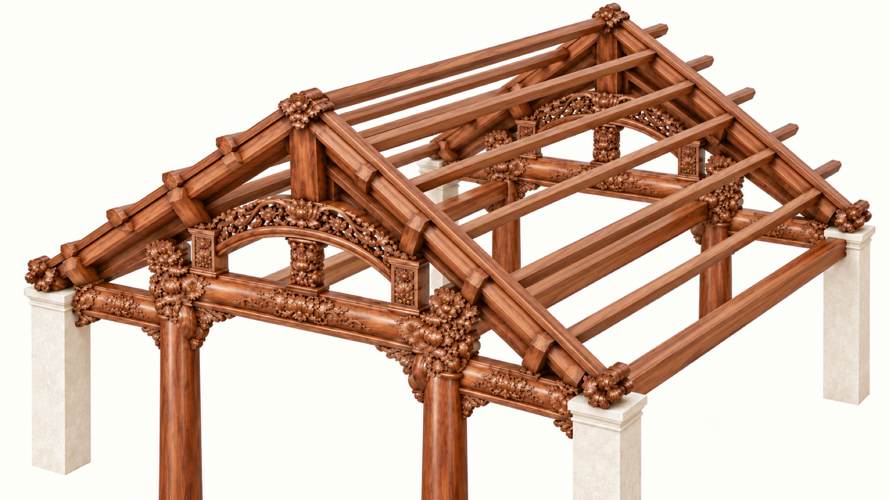
Upper roof · ridge and longitudinal purlins
Provisional member-layout view. Ridge and purlins connect successive frames; member sizes, spacing, bearings and bracing are not verified.
Full HD export resampled from 1672×941 native masterGeometry and calculation limits
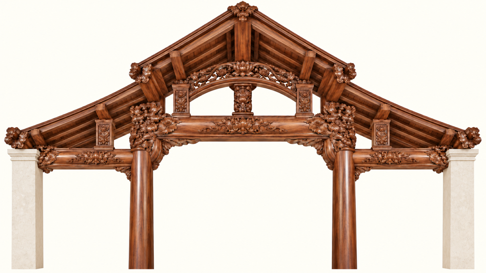
Complete frame · timber center, concrete sides
Primary flat elevation: central nave and both side beams, with two timber inner columns and two concrete outer piers.
Full HD export resampled from 1672×941 native master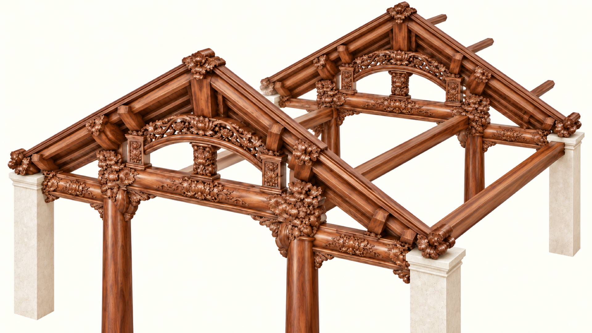
Lengthwise beams · two consecutive frames
Oblique cutaway showing transverse frames connected along the church length.
Full HD export resampled from 1672×941 native master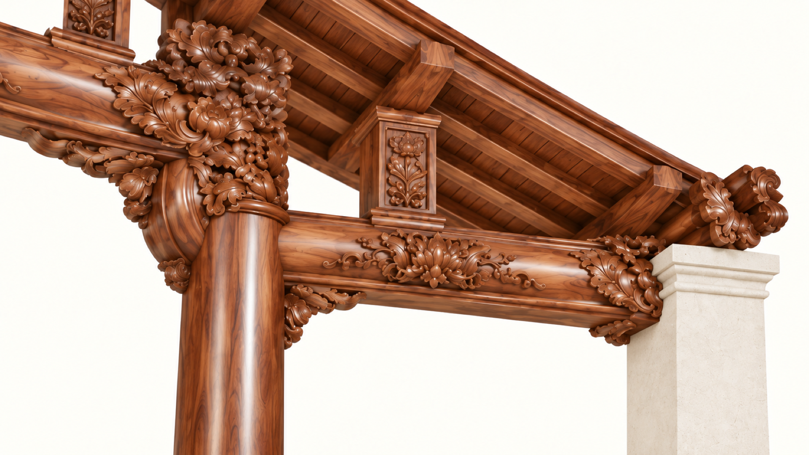
Side beam · timber to concrete
Close view of side beam from central timber column to outer concrete bearing.
Full HD export resampled from 1672×941 native master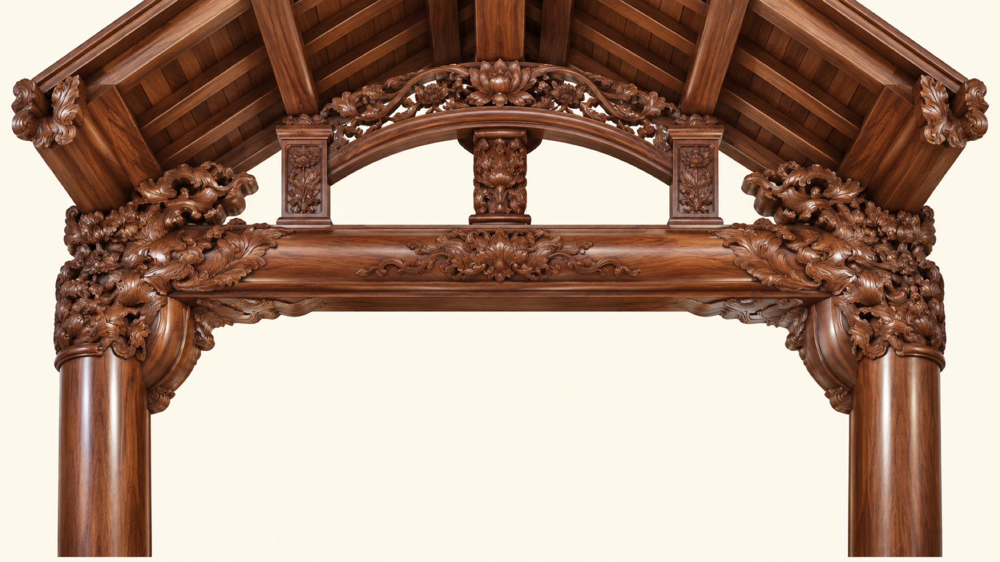
Central bay · flat front study
Central span only; use full-width frame for overall assembly.
Full HD export resampled from 1672×941 native master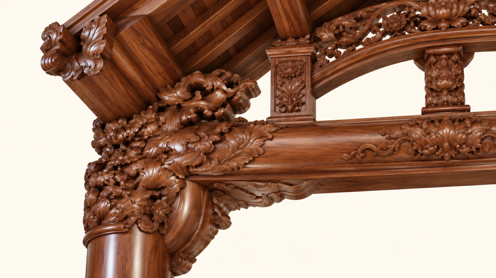
Column head · oblique close-up
Carved head, curved haunch and layered beam mouldings.
Full HD export resampled from 1672×941 native master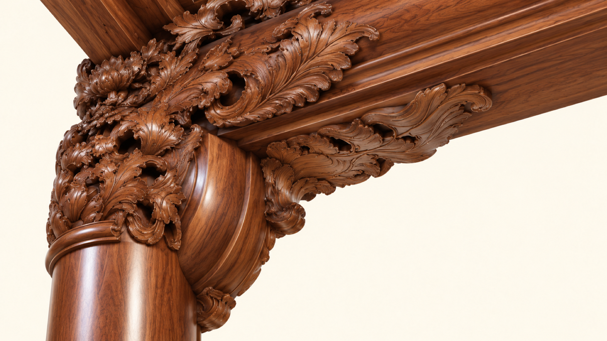
Carved bracket · underside
Undercut foliage, solid curved haunch and beam soffit.
Full HD export resampled from 1672×941 native master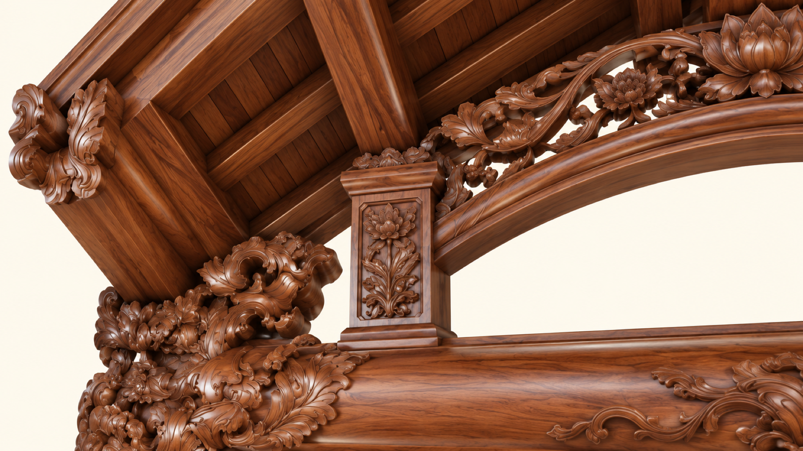
Upper rail · roof connection
Short upright, arched rail, rafters and boarding.
Full HD export resampled from 1672×941 native master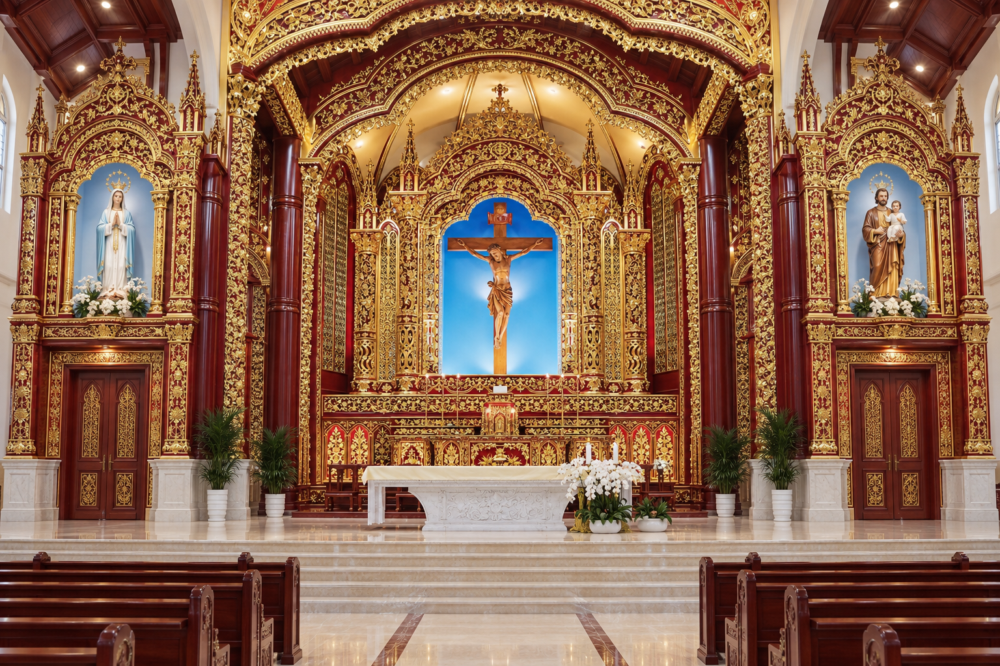
Approved sanctuary concept
Red and gold center; forward raised Marian and Joseph wings above service-room doors.
Existing reference; not certified as Full HD detail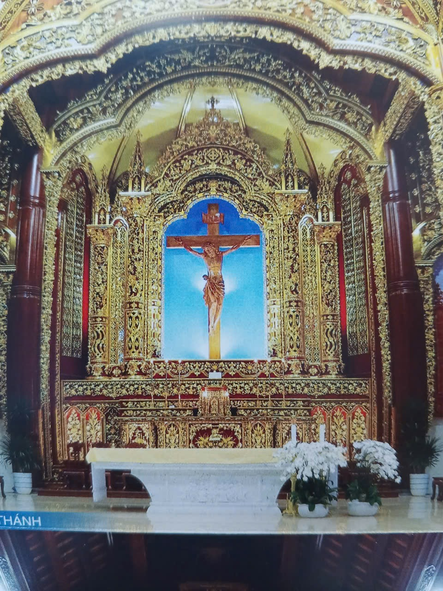
Church sanctuary reference
Original church reference for central crucifix, lacquer and gilded carving.
Existing reference; not certified as Full HD detail
Main doors and carvings
Three timber doors, arch mouldings, capitals and relief.
Existing reference; not certified as Full HD detail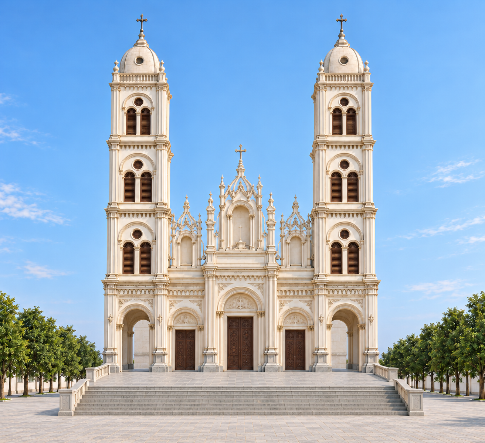
Earlier front reference · before Assumption update
Flat stage, open tower arches and brown shutters.
Existing reference; not certified as Full HD detail
Front corner in daylight
Front stage, side-door order and projecting wing.
Existing reference; not certified as Full HD detail
Roof footprint
Both 9–10 wings and the main roof. Check side-stair footprint against the plan.
Existing reference; not certified as Full HD detail
Rear elevation
Five windows, continuous stone base and no rear stairs.
Existing reference; not certified as Full HD detail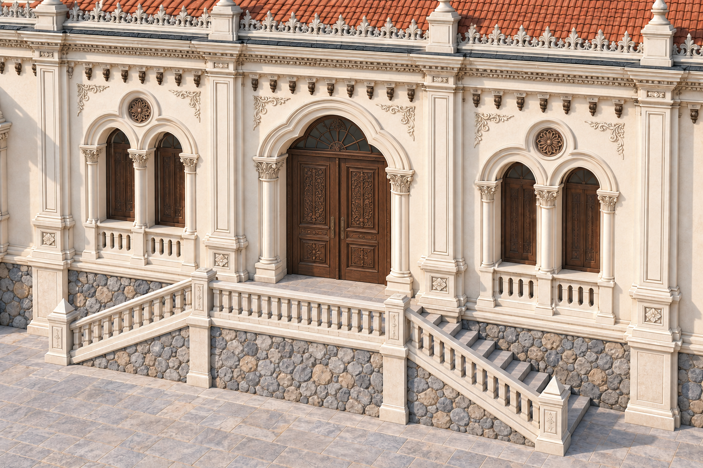
Side stair beside the door
The earlier close-up requested for preservation.
Existing reference; not certified as Full HD detail
Interior in daylight
Column rows, exposed timber roof and sanctuary arch.
Existing reference; not certified as Full HD detail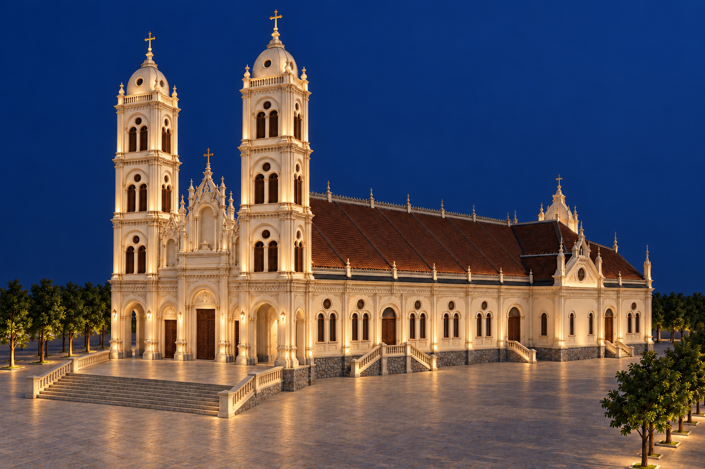
Exterior lighting
Warm light on the towers, facade, entries and steps.
Existing reference; not certified as Full HD detail
Interior lighting
The same nave under chandeliers, sconces and warm accent lights.
Existing reference; not certified as Full HD detailFor each part, add a flat view, three-quarter angle, joint close-up and underside or reverse view. Pending entries below are a shot list, not completed deliverables.